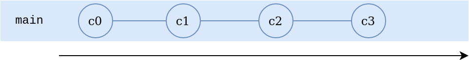
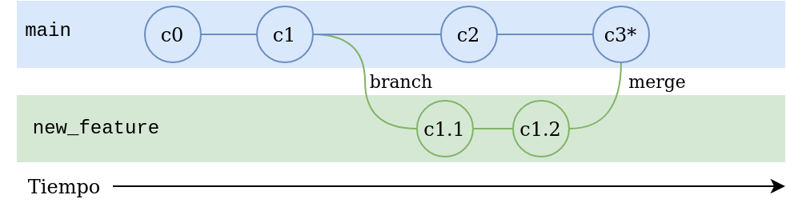
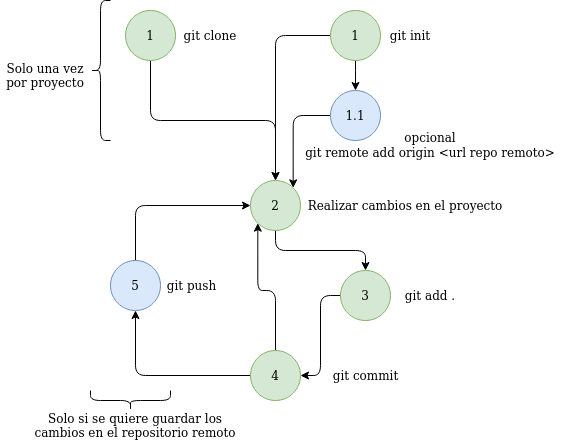

Git es un software para control de versiones (VCS del inglés Version control system) diseñado por Linus Torvalds y es de código abierto.
El control de versiones se refiere al proceso de guardar diferentes versiones a lo largo de las etapas de un proyecto. No solo versiones completas, si no cambios en el código fuente.
Con el control de versiones podemos, en cualquier momento, volver a una versión anterior cuando queramos.
¡NO! Github es una plataforma para almacenar repositorios remotos de git. Hay muchas otras alternativas a GitHub siendo la mas relevante hoy en día GitLab.
Imaginemos que estamos en un equipo de desarrollo de software de muchas personas trabajando sobre el mismo software. ¿Se imaginan compartir el código entre todos?.
Por ejemplo, si alguien abre un archivo en modo escritura, ninguna otra persona podría acceder con permisos de escritura. No habría seguimiento de cambios que hizo cada desarrollador.
Hoy en día, el software de control de versiones mas popular es Git. Y es de suma importancia para los desarrolladores comprender su funcionamiento.
Git, que presenta una arquitectura distribuida (o descentralizada). En lugar de tener un único espacio para todo el historial de versiones del software (arquitectura centralizada), como sucede de manera habitual en los sistemas de control de versiones, como CVS o Subversion, en Git, la copia de trabajo del código de cada desarrollador es también un repositorio Es decir, cada desarrollador tendrá una copia del repositorio completo en su estación de trabajo.
La arquitectura distribuida presenta una ventaja, ya que si el servidor donde está alojado nuestro código por alguna razón llega a no estar disponible por un momento, podemos seguir trabajando al tener una copia en nuestra estación de trabajo.
Caso contrario, en una arquitectura centralizada NO podremos no solamente acceder a los nuevos cambios que introdujeron los otros desarrolladores, sino tampoco a nuestro código donde estábamos trabajando.
Otra ventaja es que en Git casi todas las operaciones son locales. Reduciendo el tráfico de la red.
Antes de seguir, es necesario definir algunos conceptos básicos:
main es la rama por defecto. Anteriormente era llamada master.Commits
Usando branchs
master y new_featurenew_feature con main.master, new_feature y bug_fixmain, de hecho la mayoría de veces algún branch está por delante del mainNuestro repositorio Git tiene 3 fases o áreas:
Los archivos irán pasando de un estado a otro según vayamos avanzando.
Es nuestra carpeta local donde estamos trabajando. Si no se especifica, los archivos quedarán en esta área y no pasarán a las siguientes.
En esta área podemos hacer cualquier cambio en los archivos y no afecta al repositorio en absoluto. Pero cuando modifiquemos un archivo, el mismo pasará al estado modificado.
Si queremos llevar nuestros archivos del working directory al repositorio para almacenarlos, primero deberemos llevarlos al stagin area, donde los archivos estarán listos esperando a estar pasados al repositorio.
Para pasarlos al área siguiente (stagin area) se conoce como git add, por su comando que veremos mas adelante.
El staging es el lugar donde se guardan temporalmente los cambios, para luego ser llevados definitivamente al repositorio.
El área de staging se puede ver como un "limbo" donde nuestros archivos están por ser enviados al repositorio o ser regresados a la carpeta del proyecto.
En esta fase, los archivos que hayan pasado al area de repository, quedan almacenados en el o los repositorios.
El comando que hace posible pasar los archivos al repositorio es git commit.
Un commit es una imágen del estado de la carpeta al momento de hacerlo, por lo tanto será posible volver a esta imágen en cualquier momento.
commit contiene:
Siempre se guardará en el repositorio local. Para guardarlo también en el repositorio remoto se ejecuta lo que se llama un push dado que se usa el comando git push.
Los archivos tienen "4" estados (status) en cada diferente fase en su ciclo de vida:
git addgit add ni git commitgit addgit commit* En algunas referencias puede ser que se encuentren como tres estados, ignorando el status untracked, ya que Git no tiene registros de su existencia.
Por lo general, el flujo de trabajo en Git es el siguiente:
git init o git clone respectivamente.git remote addprograma.pygit addgit commitgit pushPara graficar lo dicho antes, el flujo y sus comandos serían así:
La instalación de Git puede variar según tu sistema operativo.
En el caso de la instalación en Windows, se incluye además el Git Bash que será donde se ejecutarán los comandos.
Hay muchas aplicaciones para realizar todos los pasos de git de forma gráfica. Por ejemplo Visual Studio Code provee herramientas básicas para trabajar con Git. GitHub Desktop (Windows/MacOS), Gittyup (Linux, Windows, MacOS).
En lo que sigue, nos centraremos al uso de la consola, ya que es como se usa en el ámbito de los desarrolladores. Ocasionalmente nos apoyaremos en las herramientas gráficas para ilustrar alguna situación.
Como hemos dicho antes, hay dos formas de iniciar un repositorio:
git init
git clone URL_GitHub/GitLab...
git add [lista de archivos]
Agregar a todos los archivos:
git add *
Agregar archivos individuales:
git add programa.py module.py
Los archivos que estén en el staged area podrán pasar a ser un commit
git commit -m "Una descripción"
Cada commit se identifican con un hash.
git log
Con ese comando podemos obtener los siguientes datos de los commits:
Se pueden usar para definir por ejemplo versiones.
git tag "v1.0"
git status
Una forma resumida
git status -s
Para crear ramas:
git switch -c "Nombre_rama"
Anteriormente se usaba git checkout -B nombre_rama para crear un branch. Pero checkout fue dejado para cambiar entre commits y se implementó switch para cambiar entre ramas.
Cambiar entre una rama u otra
git switch nombre_rama_a_cambiarnos
Una de las características mas potentes de Git es poder fusionar (mergear) las distintas ramas.
Los pasos a seguir:
git merge rama_origenPor ejemplo si estamos en la rama main y nos queremos traer los cambios que hicimos en develop
git switch main
git merge develop
Podemos volver a un commit anterior
git checkout HASH_COMMIT o TAG
Desde el sitio LearnGitBranching realizar lo siguiente:
main crear un nuevo branch llamado bugFixbugFixmain y hacer otro commitbugFix a mainThinkPython 2nd edition
(Downey-Elkner-Meyers)